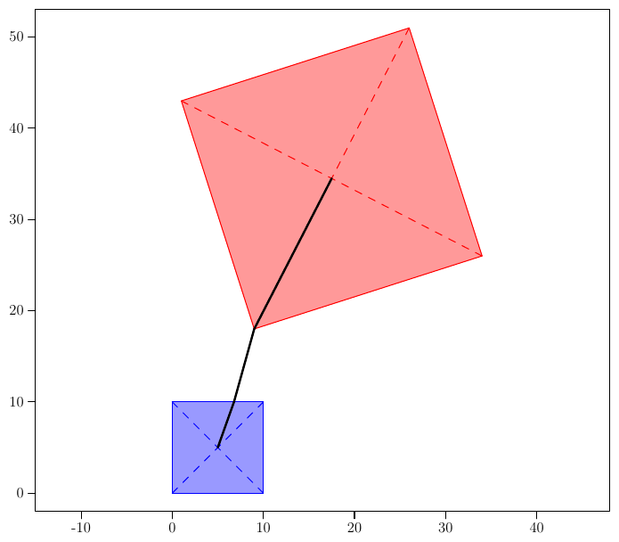

46th ICPC World Championship · Problem T
Carl the ant is back! After traversing meandering paths (Problem A, 2004 World Finals) and wandering over octahedrons (Problem C, 2009 World Finals) it is time for a little vacation — time to see the sights!
And where better to see the sights than at the tips of tall structures like, say, pyramids!! And where better to see tall pyramids but Egypt!!! (This is so exciting!!!!!)
After taking in the view from the tip of one pyramid, Carl would like to go to the tip of another. Since ants do not do particularly well in the hot sun, he wants to find the minimum distance to travel between the tips of these two pyramids, assuming he can only walk on the surfaces of the pyramids and the plane which the pyramids sit upon. The pyramids are, geometrically, right square pyramids, meaning the apex of the pyramid lies directly above the center of a square base.

The first line of input contains five integers x1, y1, x2, y2, h where x1, y1, x2, y2 (−105 ≤ x1, x2, y1, y2 ≤ 105 and (x1, y1) ≠ (x2, y2)) define an edge of the first pyramid, with the body of the pyramid lying to the left of the directed vector from (x1, y1) to (x2, y2), and h (1 ≤ h ≤ 105) is the height of the pyramid. The second line of input describes the second pyramid in the same format. The intersection of the bases of the two pyramids has 0 area.
Output the minimum distance Carl travels between the tips of the two pyramids. Your answer should have an absolute or relative error of at most 10−6.
0 0 10 0 4 9 18 34 26 42
60.866649532